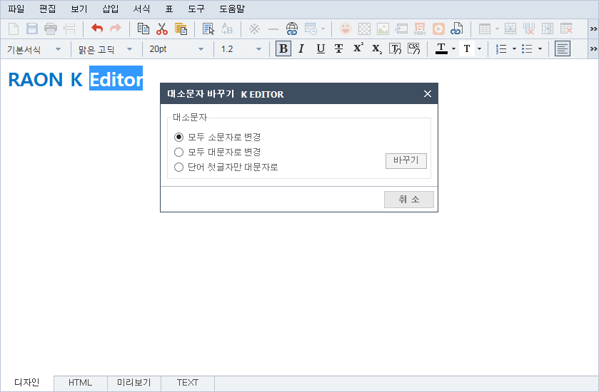
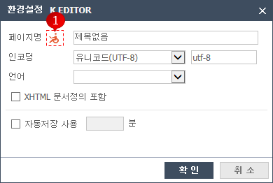
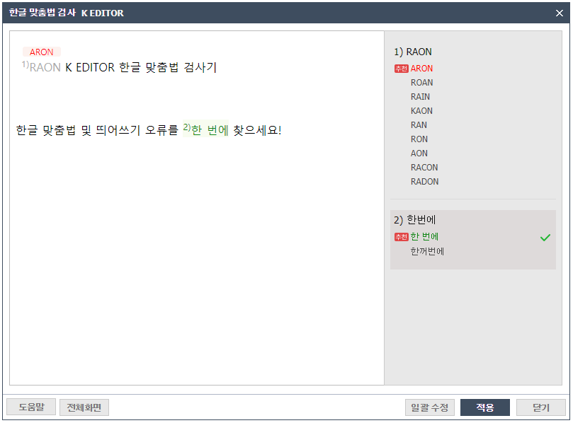

Editor내의 영문의 대소문자를 변경합니다.

01변경할 텍스트를 블럭 지정 후 도구 > 대/소문자 바꾸기를 실행합니다.
02변경할 옵션을 선택 후 바꾸기를 클릭하면 대/소문자가 변경됩니다.
html의 기본 사항을 설정할 수 있습니다.

01①번 버튼을 클릭하면 html title에 관한 웹접근성 설명이 나옵니다.
내용을 보고 적절한 title을 입력하면 됩니다.
02자동저장 사용을 분 단위로 지정 할 수 있습니다.
Editor내의 맞춤법 오류를 찾아냅니다.

01팝업창의 왼쪽, 본문 내용 중 틀린 단어가 순서대로 표시되고, 틀린 단어 위에 추천 단어가 생성됩니다.
팝업창의 오른쪽, 순서대로 틀린 단어를 표시, 틀린 단어 밑에는 수정 단어가 나오고 첫 번째 수정 단어 옆에 추천 표시를 해줍니다.
02팝업창의 왼쪽, 틀린 단어 위의 추천 단어를 클릭하면 2)번과 같이 적용되고, 팝업창의 오른쪽 수정된 단어에 체크가 됩니다.
03팝업창의 오른쪽, 틀린 단어, 수정 단어 클릭 시, 팝업창의 왼쪽 본문 내용에 적용됩니다.
04일괄 수정 버튼 클릭 시, 본인 선택 외 틀린 단어들이 추천 단어로 수정됩니다.
05적용 버튼 클릭 시, 오른쪽의 체크된 단어들이 에디터에 적용됩니다.
만약, 체크가 안 된 단어가 있다면 틀린 단어 그대로 적용됩니다.